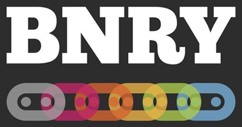

Your browser doesn't support the features required by impress.js, so you are presented with a simplified
version of this presentation.
For the best experience please use the latest Chrome, Safari or Firefox browser.
Richard Young
Github: richardyoung00
Twitter: @richardyoung00
Java
, C#
, More Java
, More C#
, JavaScript

#NOBULLSHIT
- My name is Richard, these are my contact details.
- I went through a journey that many JavaScript devs went through.
- work for BNRY, interesting tagline
- T-Shirts for RubyFuza - #bullshit and "no bullshit no"
What are we doing today?
- Why Redux?
- Why WebSockets?
- Why Redux with WebSockets?
- So what are we going to be talking about today?
- Why redux
- Why Websockets
- Why on earth would you present a talk on these seemingly unrelated technologies
- Hopefully today I can show you how you can combine, these, to make your we apps super awesome and
super responsive
Managing state is hard
console.log(this.state)
Redux helps you manage your state
Redux makes state management predictable
...but not necessarily easy
- Who has worked with redux before? Or Flux?
- Managing state is hard, esp in bigger apps
- If you have worked on a bigger app, you know the struggle of figuring out what is in your state
- Redux helps you manage your state
- Redux makes state management predictable
- ...but not necessarily easy
What is redux?
Redux attempts to make state mutations predictable by imposing certain restrictions on how
and when updates can happen
- So what is redux? Redux attempts to make state mutations predictable by imposing certain
restrictions on how and when updates can happen
- That sounds a bit complicated, So lets simplify to an analogy that's easy for everyone to
understand, I think we can all agree that redux sounds a bit like...
Coincidentally, redux has 3 core principles
- Coincidentally, redux has 3 core principles
 Single source of truth
Single source of truth
State is read-only
Changes are made with pure functions
The three ducks of redux
- First: single source of truth.
- The state of your whole application is stored in an object tree within a single store.
- Your state can be serialized easily. THis makes it easier to create universal apps, serialize your
state and
and hydrated into the client easily.
- A single state makes it easier to debug or inspect your state
- 2nd: State is read-only
- The only way to change the state is to emit an action, an plain javascript object describing what
happened.
- 3rd: Changes are made with pure functions
- To specify how the state tree is transformed by our actions, we write state reducers as pure
functions.
- We will refer to these as the three ducks of redux
Actions
Plain JS object describing a change to the state
{ type: 'ADD_TODO', text: 'Go to swimming pool' }
{ type: 'TOGGLE_TODO', index: 1 }
{ type: 'SET_VISIBILITY_FILTER', filter: 'SHOW_ALL' }
...but not describing how to change the state
- So we emit actions, as plain javascript objects, describing the change we want to make to our
state
- Describe WHAT is changing, but not how to change it
- The only mandatory field on and action is a type field, which needs to be string
- Our actions completely serializable, this is important for later
function myReducer(state = [], action) {
switch(action.type) {
case "ADD_TODO":
return { /* ... */ }
default:
return state;
}
}
- A reducer if a PURE function that takes in previous state and an action, and returns a new state.
- Every action will go through every reducer
- If we want a reducer to respond to a particular type of action, we make a copy of the state,
modify the copy, and return it as our new state. Remember duck 2, our state is completely read only.
- If this reducer shouldn't respond to a particular action, we add a default case, and just return our
state
import { createStore, combineReducers } from 'redux';
const reducers = combineReducers({
reducer1, reducer2
});
const store = createStore(reducers);
store.dispatch(
{ type: 'ADD_TODO', text: 'Draw a duck' }
);
const unsubscribe = store.subscribe(listener);
const state = store.getState();
- We interact with redux via an object called the store
- The store holds the state, and allows us to access it via the getState() function
- The store allows us to dispatch actions against it via the dispatch function
- The store allows us to register listeners against it via the subscribe function.
These listeners will be called every time, and action is dispatched against our store
Reacting to state changes
- We could add listeners to our state, and get values via
store.getState() every time
our state changes
- More likely to use existing bindings like
react-redux
- Having a well managed state great, but how do we read data out of it
- We could subscriber to state changes, and dig into our state each time it changes and update our UI
- But that is a fairly low level API, and we can use existing bindings from libraries like
react-redux to make the state available to our application
- Which uses some black magic to make our store available to all child components
Time to get our ducks in a row...
Demo redux-demo-1
WebSockets
Demo redux-demo-1